Hi, I'm Ruchi. Currently pursuing a master's degree at the University of Michigan in HCI, I am a UX Designer, Front End Developer, and a Data Visualization Enthusiast. I love everything to do with charts, graphs, and experiences that make me smile.
In my free time, you’ll find me reading / watching political dramas (current obsession is West Wing) or satisfying my sweet tooth. I love theater and story-telling (the image on the left is from when I played Victoria Ocampo). Hit me up if you want to talk about any of my projects or want to know the best chocolate fudge in Ann Arbor / Bangalore / Mumbai / Goa / Nagpur!
Seeking full time roles in User Experience Design.
Problem: The number of women in technology is alarmingly low at 26% (NCWIT, 2017). While pair programming a possible solution for this, there are no platforms to enable the search for a partner.
Skills: Sketching, Persona Creation, Design Synthesis, Brainstorming, Paper Prototyping, Usability Testing, User Flows, Wireframing, High Fidelity Prototyping
Solution: A web platform to enable partner search
Tools: Sketch, InVision, Pen and Paper
The number of women technology is alarmingly low with only 26% of computing jobs being held by women (NCWIT, 2017). A lot of women leave the field due to lack of mentorship and network to tap into. The concept of pair-programming is the perfect solution for this problem as it not only helps improve skills and boost confidence, it also builds a network of women in technology.
However, women often face difficulties in finding partners to pair program with. There is no dedicated platform to support this search and the existing platforms have mostly male users. To tackle this problem, I have created a Web Application called Coder Girls which allows users to search for pair programming partners.
I conducted 5 user interviews of women in computer science (students and industry professionals) who have pair-programmed in the past. While all of them enjoyed the process when done in class/for work, most of them had never tried it outside of class/work because it was difficult to find someone to pair with, who had similar interests and proficiencies as them.
These interviews gave me key insights about the need for a partner search platform. I also understood the motivation of my users through this process, with most users wanting this platform when they are preparing for interviews/exams or when they are just starting to learn a new coding language.
I looked at the three most popular coding-partner search alternatives currently existing and compared their features, pros, and cons. The competitors included a Badge (pairprogramwith.me), a twitter hashtag (#pairwithme), and meetup.com.
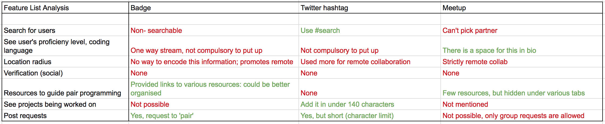The two major gaps in the existing systems were the lack of resources for in-person (not remote) partner search and the lack of proficiency information across the board. In the user interviews I had found that skill levels were a key criteria for users when searching for partners.
Based on the interviews, I created an empathy map for each persona involving their Needs, Goals and Motivations, Tasks, Feelings, Pain Points, and Influences. This helped me organize their information into Behaviour, Needs, Goals/ Motivation and Personality. Adding their demographics and a personal quote brought them to life. I could empathise with these personas and create a meaningful product for my users.
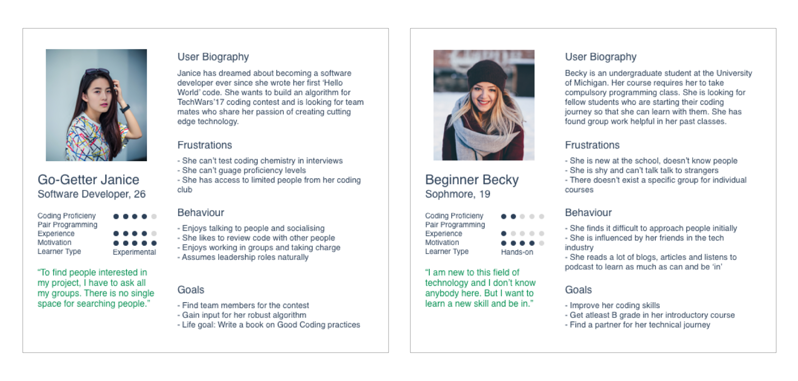Having gained an understanding of who the users were and what they needed, I started brainstorminging a few possible solutions to the problem and expanded them to include storyboards for each. This helped me explore a range of solutions, from physical to mixed reality:
Using a band that lights up when users cross paths, using a dedicated app, fast-switching hackathons, adding badges on LinkedIn profiles, using existing social media networks and posting on MOOCs discussion boards were some of them. (Each storyboard can be read top to bottom)

The solutions were then evaluated for feasability. I chose the 'dedicated application' solution as it fulfilled the problem need of supporting remote and in-person partner search both, in addition to other advantages such as accessbility.
Going forward with the application, I identified one critical feature and explored three solutions of this feature. The most critical feature for this project is search - how a user searches, what is returned in the search, how the search list is presented, what is the order of the list and other such questions. I came up with possible ways to achieve these tasks and analyses each approach against a set of criteria particular to that question.
This helped me determine major design decisions such as forced login to allow customization, profile creation to deliver rich results in searches by other users, ordering searches by matching interests to increase chances of a match and using in-app messaging for contact between two users for ease of use and quick response time. The detailed questions, options, and criteria used for each question are shown in the diagrams below.
Paper prototyping was a quick, easy and inexpensive method to get feedback on my design. I tested the prototype with real users and discovered that I hadn't included the feature to edit profile. I also learned that adding LinkedIn login was much appreciated by most users as it reduced their onboarding time. Another hurdle I found in my design was that because of the position of filters, users tended to believe that all of them had to be selected to filter search results. I changed this to a universal search bar to avoid confusion. I gained a lot of constructive feedback in this process and re-iterated over my design to incorporate the insights gained from it.
Paper Prototype LinkSearch options (sidebar filters) in Paper Prototype
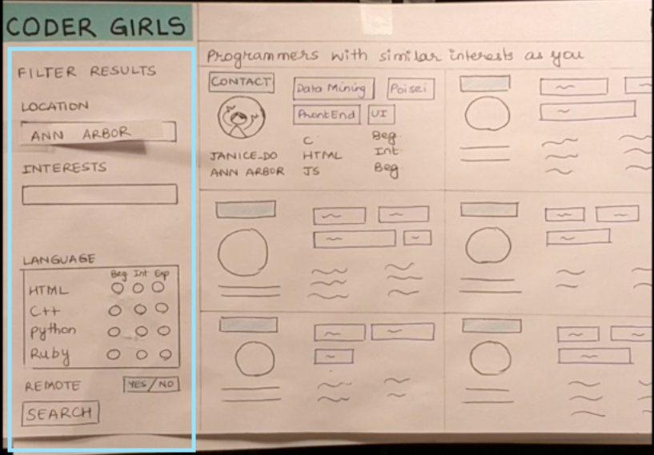Search bar in Digital Prototype
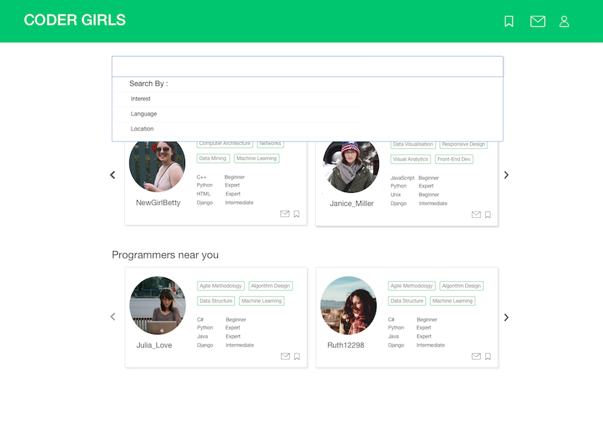Incorportating the changes from the Paper Prototyping feedback, I mapped out the user flows for the entire application and created wireframes. This instigated me to think about the information architecture of the application and simplify some user paths. The main pages were Onboarding(Creating a Profile), Search, User Profile and Chat. The wireframes were employed while building the digital prototype.
I created each screen in Sketch and strung them together in a workflow in InVision. In the course of this, I did comparative feature analysis on the search bar and decided to change the universal search to include categories. I also added a 'Suggested Matches' area on the search page to increase user engagement. The high fidelity prototpye allowed users to provide specific feedback about areas of confusion. For example, some users were confused on how to save people for future reference, this resulted in the addition of a 'bookmark' feature on the user profile.
I chose to use Material UI guidelines for this project as it gave a modern feel to the application and the user is comfortable with it (positive transfer from using other services on the internet).
You can play with the prototype here. I look forward to your suggestions!
Through the course of this project, I explored multiple design approaches, such as reflective, participatory and value sensitive design. For a topic that involved gender inclusion and coding, I found the participatory design process to be the most helpful. The target user had a lot of tacit knowledge and pain points that aided the design. Since the platform involved social interaction, I used concepts such as 'multiple selves' to enhance the experience of belonging to a community.
Over the course of the project I realized the importance of involving the user in the process. Often, what I as a designer assumed to be obvious, was not the case. I also learned to iterate over my designs. This process lead to small tiny steps towards improvement, and before I realised it, my product looked much neater and had a much smoother user experience than what I had set out to achieve. However, if I could change one thing, it would be my user research. I'm afraid I might have a slight sampling bias here since my dataset was very limited. In the future, I will interview more users and perhaps also interview anti-users. I would also like to use a tool like Framer.js/ Proto.io to include microinteractions in my prototype since I believe they will deliver the exact feel of the product. Overall, this project taught me a lot about thinking from the users perspective and using my findings to create a better experience!
These projects were carried out as part of my employment at Flipkart.
Details of the products are omitted due to a Non-Disclosure Agreement.
Problem: The existing case management tool involved multiple screens with information scattered across them. The goal was to make a leaner tool with better information categorisation to reduce time spent in analyzing each blacklisting case.
Skills: Interviewing, Whiteboarding, Information Architecture, Wireframing, Usability Testing, Agile Development
Solution: Designed a new web application with cleaner information flow and migrated to a new tech stack (ReactJS) for better maintainability
Tools: Sketch, ReactJS, HTML, JS, CSS, Github
Role: Lead UX Designer and Web Developer
Since the existing application had been in use for over a year, we decided to take up the Participatory Design approach as our users had tacit knowledge about the tool. User interviews were conducted to find the pain points in the existing system. This was followed by drawing an information diagram of the current system and reorganizing it using new categories to arrive at the new information diagram via the process of whiteboarding. Wireframes were created using the results of the earlier activity. A new look was decided for the web-app, keeping in mind the Flipkart brand’s new theme and adding material-UI. High Fidelity prototype was built in code (ReactJS). The new system was tested by users by conducting contextual inquiry style interviews, where users interacted with the system and provided first-usage feedback. After some tweaks, a sample set of users was onboarded for a week. The feedback received from this set was then incorporated into the system, resulting in the final development and deployment.
Problem: Data across the team was available in all capacities to multiple users. This data needed to be guard-railed to ensure quality and security.
Skills: Brainstorming, SWOT Analysis, Whiteboarding, Wireframing, Usability Testing, Prototyping, Development
Solution: Creation of ‘groups’ headed by admins who could determine which individual had access to data in what capacity (read, write, download)
Tools: Sketch, ReactJS, HTML, JS, CSS, Github
Role: Jr. UX Designer and Web Developer
Data within the company has to be secured with respect to who is using it and for what purpose. The team brainstormed multiple solution to adding guardrails, keeping in mind the various types of data the company owned. Brainstorming resulted in creating a few key ideas that we thought were possible technically. These were presented to the stakeholders and after discussions guided by a SWOT analysis, the idea of creating ‘groups’ within the company with admins who could decide privileges for their users was selected. After several iterations of problem scoping and wireframing, a high fidelity prototype was built in ReactJS (HTML, CSS, JS). Usability testing was conducted on this tool with each user being given specific tasks and being observed. Finally, the finished product code was deployed.
Problem: Visualise a large dataset of education related fields in the state of Maharashtra
Tools used: D3.js, JS, HTML, CSS, Github
Solution: Zoomable TreeMap visualization to show hierarchical presence of infrastructural facilities
Role: Research Associate
The Government of Maharashtra conducts surveys every year to record the presence of infrastructural facilities in schools all across the state. It also records values of gender ratio, student to teacher ratio and a separate examination to survey the learning levels at these schools. These surveys are extensive in terms of geography covered.
The state of Maharashtra can be divided into divisions -> districts -> clusters -> villages -> schools.
The project started out with exploring the data set and it was soon clear that this information can be overwhelming. So we decided to make it easier to extract sense-worthy information from this dataset. Various visualizations were tested and we zeroed in on a TreeMap as it was perfect for showing hierarchical data. The project was aimed at conveying the presence and magnitude of problem of areas at each level in the state.
Hierarchical data can be represented as a treemap. This visualization takes the treemap one step further, by adding a choropleth element to it. Not only are the rectangles’ areas proportional to the enrolment of that geographical area, their colors represent the percentage of schools that have a particular educational infrastructural facility such as playground/ electricity/ water/ ramps etc. This allows for identification and deeper analysis of problem areas by looking into sub-areas. It also allows comparison across geographical areas and across facilities. Smooth transitions upon zoom maintain visual continuity and display of specific data on hover allows context maintenance. The tool can be extended to include other facilities and states.
You can explore the entire visualization at the InfoDesign Lab’s website.
Problem: Use Papert’s idea of ‘objects to think with’ to make the students aware of the discrimination faced by the various genders ( known as GenderFuck in the New Liberal Arts 2.0 )
Skills: Game design, User Testing for games, Sentiment Analysis
Solution: Board Game
Team: Salik Ansari, Ruchi Ookalkar, Apoorva Savant
We began by exploring the concept of GenderFuck and what it meant in the society we were living in. This lead to a lot of research about gender discrimination in the modern context and also about gender fluidity. Using Papert’s ideas, we wanted to build an object which the user could think with. So we decided to build a board game which would allow the players to feel what real people feel when they are discriminated against.
The examples of gender discrimination were crowdsourced from our social media network. While it limited the society, we received a great variation within that spectrum.
These examples were then given ‘influence points’ based on how significantly they affected the person's life.
Using the influence points and examples, a twist on the traditional snakes and ladders was created. The game consisted of cards, which spelled out the player's gender and punishment for belonging to that gender. The punishment was determined by the points calculated earlier.
The game was tested with fellow graduate students to get a sense of what was going right and wrong. We observed that 4 players were the most optimum to enjoying this game. The final prototype was built and displayed in an exhibition where undergraduate students could play with it. The game invoked multiple reactions, often leading to heated arguments and discussions about the discriminations. It was particularly interesting to note the knowledge exchange happening during the gameplay between members, such as “My mom does this. Why is this wrong?”, followed by an explanation.
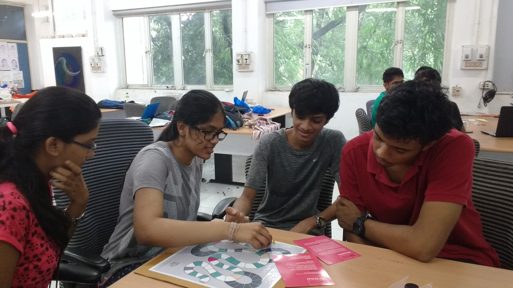Problem: ICPSR recently underwent a reorganization from project-specific teams to process-oriented teams. Due to lack of standards, there is redundancy in work and work-turnaround is slow.
Skills: Contextual Inquiry, Affinity Wall Mapping, User Interviews, Interview Interpretation, Empathetic Design
Solution: Recommended changes to the current standards and workflow processes to reduce redundancy in work
Team: Anant Mittal, Olivia, Ruchi Ookalkar, Ruth Wang
ICPSCR (Inter-University Consortium for Political and Social Research) is the world leader in data curation of social data. The process within the organization varies from data acquisition, data cleaning, data massaging, generating metadata and creating codebooks to the final release of data for public use on their website.
The organization went through a structural change in January 2018. Prior to January 2018, the organization was divided into topical archives, i.e teams with expertise in a particular archive. Each archive had its own manager who coordinated with funders (who set requirements for the curation). Post the reorganization, all the data curators were brought into one team, lead by curation supervisors. The supervisors communicated with the managers.
This change from topical expertise to a general pool has led to a pushback in terms of accepting a uniform standard since they are dealing with historical ways of doing things.
We conducted a total of 6 interviews from across the various level of the organizational hierarchy (project managers, data curators, curation supervisors and head of the organization). The interviews were conducted in the contextual style, where the interviewer asked questions at the place of work of the interviewee, often asking the interviewee to demonstrate tasks which came up during the interview.
This process helped us discover problems and social issues within the organization. The interviews were conducted by two members - one acting as the interviewer and one as the note taker. We also collected audio recordings of the interview and images from the workplace to guide our analysis.
Each interview was followed by an interpretation session within 24 hours of the interview. During these sessions, we went over the interview notes, recordings and images and analyses these to generate affinity notes - one complete sentence that would describe what was happening at that point. We also noted down any questions we wanted to cover in future interviews and jotted down our analysis of the events.
After the 6 interviews, we had about 500 notes. We went ahead and categorized these into three levels. The white notes were grouped together by similarity of content or possible causal relationships to arrive at the yellow notes. We then repeated the process two more times to arrive at pink and blue notes. We ensured that none of the clusters had more than 7 ideas in each. This helped us in writing clear detailed sentences describing each cluster. The final pink notes gave us an idea of what exactly was happening in the organization and the key issues faced by the staff.
From the blue sticky notes arrived at in the affinity wall, we made a map of the Key Findings. These showcased the root cause of the problems our client was facing. We then brainstormed for solutions to each problem, by exploring existing solution in the market and devising our own solutions tailored for our client. The brainstorming exercise resulted in a lot of ideas which were then passed through a rubric of feasibility, cost of implementation, impact of the solution and political acceptance. Following this activity there emerged two winners for each problem area. We then went ahead and created a report of these solutions where we presented both long-term and short-term solutions to our client. (The report is available on request.)
This project helped me grow as not only a user researcher, it also helped me grow as a team player. I learned to ask crisp, targeted questions in the contextual interviews and I also learned to take notes in the interviews. It was challenging at first to relate affinity notes to one another but with practice, I became better at it. I definitely learned a lot about presenting my ideas, both to my team members and to the client. I ended up improving my soft skills in this project in addition to becoming a better user researcher.
Problem: Usage of Google Home Mini is low amongst college students
Skills: Interaction Mapping, Interviews, Comparative Analysis, Surveys, Heuristic Evaluation, Usability Tests
Solution: Series of Marketing and Usability Recommendations
Team: Tori Cox, Bonnie Lee, Katy Madier, Ruchi Ookalkar, Yu Qin
We started out by speaking to the User Research team at Google, who were our stakeholders in this project. They wanted the project to be focussed on “How college students use the mini and what could be done to increase usage in this demographic?”. We iterated and refined the research questions to the following:
Throughout the project, we conducted multiple small studies that involved looking at these questions from different perspectives.
We started out by exploring the Google Home Mini and understanding the system. To do this, we created an Interaction Map. We went through all possible user paths that might interest a college student and drew them out to examine what was included in the system and how they interacted with each other. We found that the Google Home Mini can’t perform certain operations which the companion app can do and vice versa. Another finding was the existence of multiple dead-ends. Although there were multiple branches of the map, each branch was very shallow, often ending in one/two sentence exchanges.

In our attempt to further understand the product and it’s users we conducted a series of initial interviews with 5 users. These interviews were exploratory in nature and consisted of open-ended questions regarding smart speaker usage. After the interviews, we conducted an affinity mapping exercise and arrived at key behavior patterns from our users. We found that college students were highly mobile and social. These were features that the Google Home Mini did not support. The idea of having a dedicated space for discovering new features appealed to our interviewees. Following the key findings from the affinity wall, we created personas and scenarios which depicted our target users.
“I actually think that [dedicated space for new feature discovery] is more helpful, because then I can just go bookmark it and go back to it. There is no sense of urgency that I have to go do it right now, like a pop up.“
Once we had understood the Google Home Mini system and it’s users we wanted to evaluate its competitors and how the Google Home Mini stood against them. Since our client had already done a lot of research on the features, they wanted us to look at the product from a hardware perspective for this task. We decided to focus on the speaker, microphone and voice recognition quality. Following Mark Newman's taxonomy, we found direct, indirect, partial, parallel and analogous comparators and compared them on pre-decided parameters. We once again found that the Mini lost on portability. It also didn’t perform very well in microphone quality.
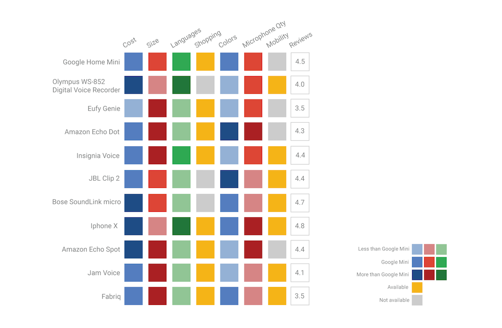Going back to our original research questions, we designed a survey on Qualtrics that asked current users (college students) and non-users (college students) about their media consumption and perception about the Mini. Our most revealing finding was in the fact that out of 115 survey takers only 9 owned a Mini. The survey also revealed that user’s expectations of the Google Home Mini were high and they perceived it to meet those expectations. We also found that college students were heavily influenced by their social groups.
Having found all this information regarding our user’s behaviors and expectations, it was time to test whether the system would fulfill these needs. We evaluated the Google Home Mini using Nielsen’s heuristic categories for usability testing. We found that the mini scored well for accessibility, consistency, and prevention, and understood most accents tested. However, it was difficult for the testers to navigate through the mini system especially due to the need to ‘activate’ the system every time which broke natural conversation.
We are currently in the process of conducting usability tests with college students. We hope to find results relevant to our research questions and improve the usability of the Mini through this project. If you would like to read the detailed findings and recommendations from this project please send me an email.
This project won the Student Design Competition at UXPA, 2018
Problem: The biggest challenge when learning a new language is talking in that language.
Skills: Voice Interacion Design, Sample Dialog Writing, Decision Trees, Wizard of Oz Testing, User Flows, Mixed Methods Research
Solution: Chattie, a voice application, aims at solving this by engaging the user in real worl conversations.
Team: Pallavi Benawri, Puhe Liang, Ruchi Ookalkar, Sonali Tandon
There are over 1.5 billion people worldwide learning English alone as a second language. A key aspect of learning a new language is becoming comfortable in speaking it. While there are multiple avenues of learning to read and write a language, speaking remains a problem. There is limited access to speaking partners and constructive pronunciation feedback coupled with the social anxiety of practicing with strangers.
To evaluate the problems involving language learning, we sent out a survey to students at the University of Michigan and received 148 responses. 73% (n= 108) of our respondents said that speaking was the most difficult part of learning a new language.
Equipped with information that speaking was a key concern, we conducted 5 user interviews of beginner to intermediate language learners who had used voice assistants. The conversations were about their experiences of using voice assistants and frustrations and wins while practicing speaking.
We then examined the applications that our users were currently using to support their speaking endeavors.
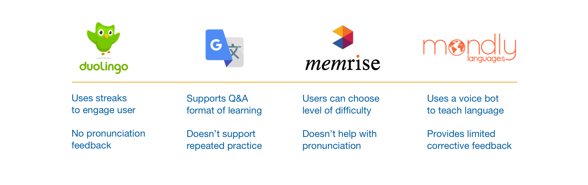We analyzed the user research to arrive at four features that would help our users the most in practicing conversations in a new language.

Having decided the features, we set about designing the user flow. This involved mapping out all possible paths and creating a decision tree based on user input and expected output. The process was repeated to extend the tree for all features. We followed Cathy Pearl’s book and determined the interaction architecture for Chattie.
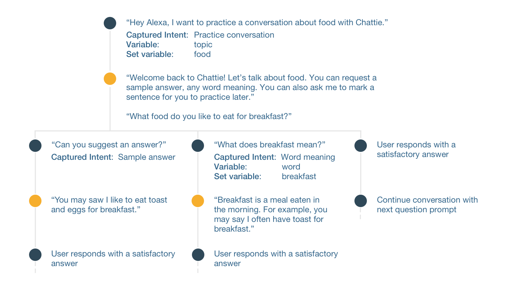To write the scripts for each dialog, we conducted multiple hallway tests to understand how people spoke in the real world. This involved giving them small prompts such as “What did you eat for dinner yesterday?” and then analyzing multiple responses. With each test, we iterated the exact wording of the dialog until we received the most natural responses and minimum confused looks from our users. We also designed scripts for multiple dead-ends i.e when the user wanted information that Chattie was not equipped to provide.
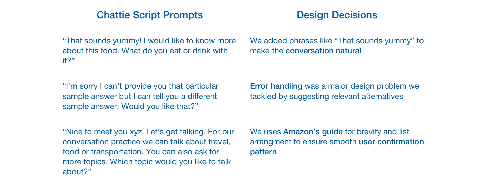We conducted three Wizard-of-Oz tests by recording clips and playing them through an Amazon Echo Dot. 3/3 users found the design easy to use and rated an average of 4.3 (out of 5) for “likely to recommend to a friend”.
During the initial tests, we found that our users described Chattie as a teacher. This was in stark contrast to the "friend" vibe that we wanted to design for. We changed the language to include everyday vocabulary and encouragements, such as, "That sounds yummy" or "I would love to try that." Our subsequent user described Chattie as a friend which meant our script changes had worked. Overall, the wizard-of-tests proved the success of Chattie as a design solution for the problem of speaking a new language.
This project was a self-initiated effort born out of my passion for Voice Interfaces. I learned to design decision trees, write scripts and found myself observing the mannerisms in which people talked. It not only helped me implement all my readings of how-to-design-for-voice but it also brought forward a lot of new questions - How does accessibility in voice work? How do we account for accents? How does the physical environment affect the user? I hope to delve deeper into this realm and explore the endless possibilities that voice offers.
This project was done during the Product Design Internship at Sumo Logic
Problem: Users feel lost when investigating causes for alerts on Sumo Logic and lose critical time
Skills: Problem Identification, Design Synthesis, Brainstorming, Wireframing, High Fidelity Prototyping, Cross Functional Teamwork
Solution: A Context Panel feature on dashboards to improve the investigation and troubleshooting experience of our customers
Tools: Sketch, Framer.js, UXPin, Pen and Paper
Sumo Logic is a Log Management and Security Analytics Company. In everyday words, it provides businesses a web-based tool to monitor their machine application data and investigate breakdowns.
When our customer’s application breaks down, their DevOps Engineers receive an alert about the issue. They log onto SumoLogic to examine the issue and investigate the cause of the outage. Since they are coming to the platform at a critical time, we want to ensure an efficient and smooth investigation experience for them. The goal of the internship was to
Improve the Investigation Experience on Sumo Logic
The initial goal was very vague. In order to deal with the ambiguity in this project, I decided to examine our users behaviour. I wanted to understand how they currently investigated on the platform (existing user behaviour) and the gaps where Sumo Logic was failing its users (paint points).
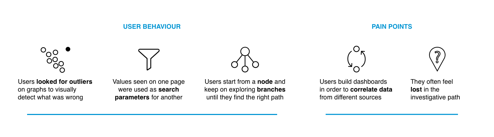Through user interviews we found that users used a node-branching search pattern, had difficulty in correlating various data sources and often felt lost during the process.
Equipped with this information, I brainstormed three design features to help our users - Timeline, Playground, Context Panels.
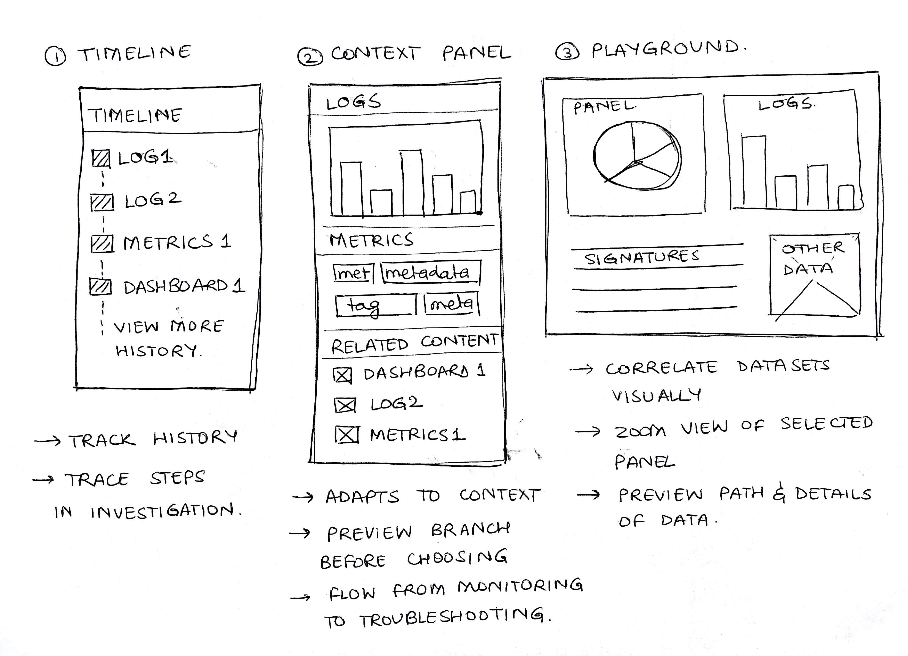I presented these options to the stakeholders (UX Director, Engineers and Product Managers). After discussions about business impact we decided to go with the Context Panels solution as it prompted our users to enter the Logs Page (which drives most of the income at Sumo Logic).
I looked at both direct and indirect competitors to understand how they presented related content and helped users in investigation.
Having understood how our existing teams presented content, I wanted to go ahead and start designing it for our users. However, before actually putting pen to paper, I built a storyboard to examine the scenario when this feature will be used. Through this process, I understood the environments our users would be in and their context of use.
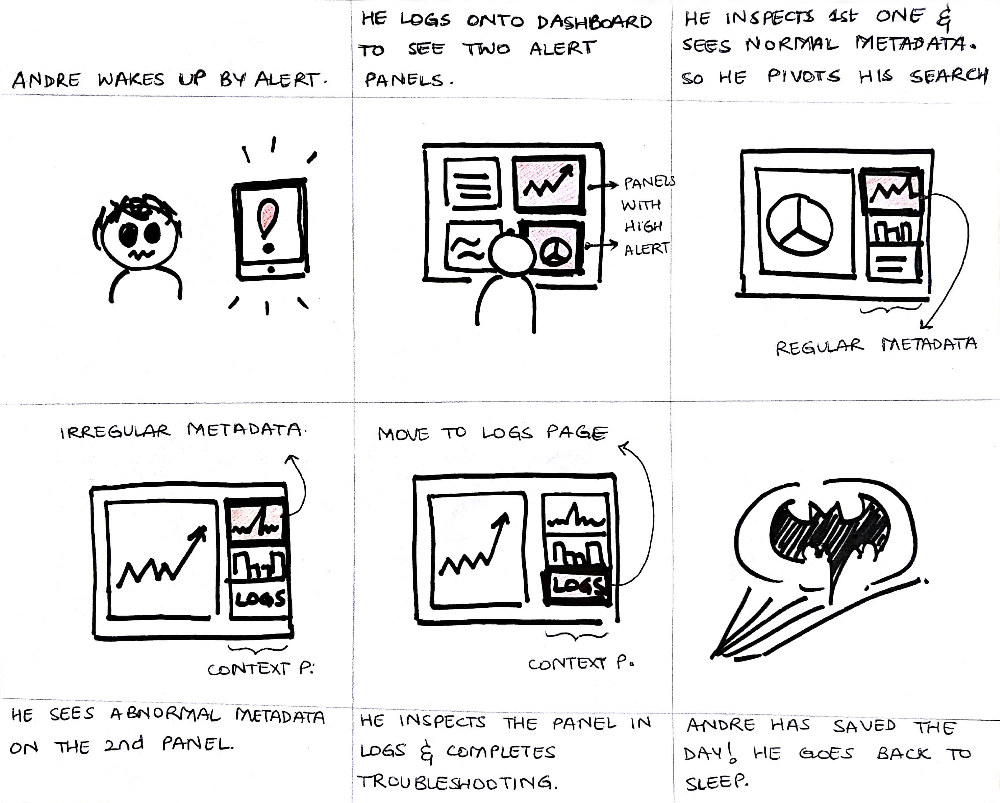Upon inspecting the user needs and business requirements, I combined the two to arrive at necessary components. I then collaborated with my mentor to decide the information hierarchy within the context panels and built wireframes to demonstrate the same.
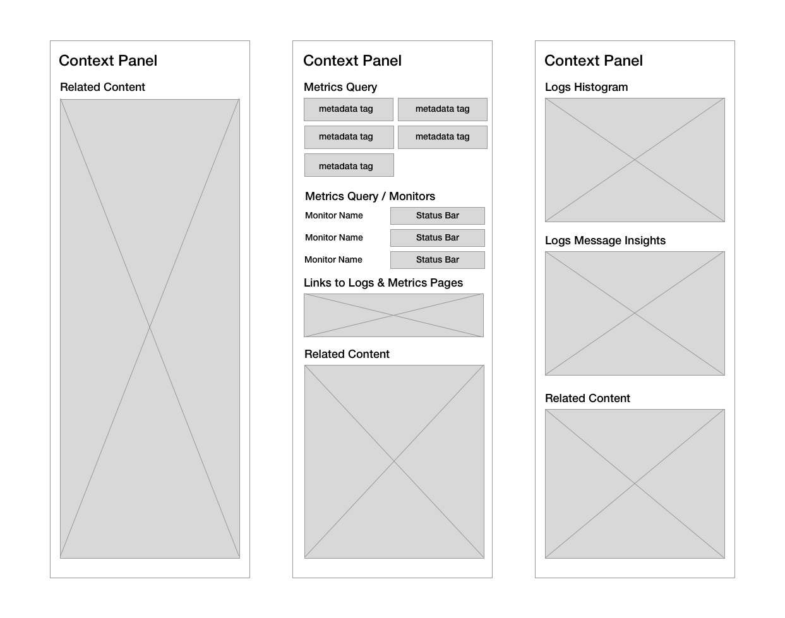Once we had designed the wireframes, I used the component library to complete the visual design in SketchApp. I then thought about interactions across the feature’s life cycle - how it would interact with other elements in the product, where the links would direct, what within the context panel would be interactive etc. I captured all these interactions in a clickable interactive prototype built using UXPin.
I worked with the User Research Team to test this prototype with our users. We conducted 4 interviews which involved a demonstration of the prototype followed by asking the users for their reactions/impressions of it. 4/4 Users found value in the feature and suggested use cases where they would find th feature useful. This was a major success criteria for the project following which the feature was handed off to a scrum team to build.
"Pivoting [enabled by Context Panels] is a very useful thing. I don’t have to write a new search, and it’s easier to find the root cause." P2
Based on the interaction specific feedback, we iterated over the design. We added a logs histogram in the metrics context panel since all users suggested it would be useful. We removed the zoomed in state since the product already had a ‘Zoom’ button with the same functionality and all 4 of our users were confused with this interference.
This industry experience of being a Product Designer at a mid-size startup taught me a lot. It not only helped me pick up and improve my prototyping skills (by giving me a chance to learn UXPin, Framer.js), it also helped me improved my soft skills. I practiced presenting design decisions to various stakeholders, working within a cross functional team and improved communication skills. Working with an enterprise product required me to develop empathy and think about my users more than I had done in the past. The entire process gave me a taste of dealing with ambiguity and using my design skills to create a seamless user experience.